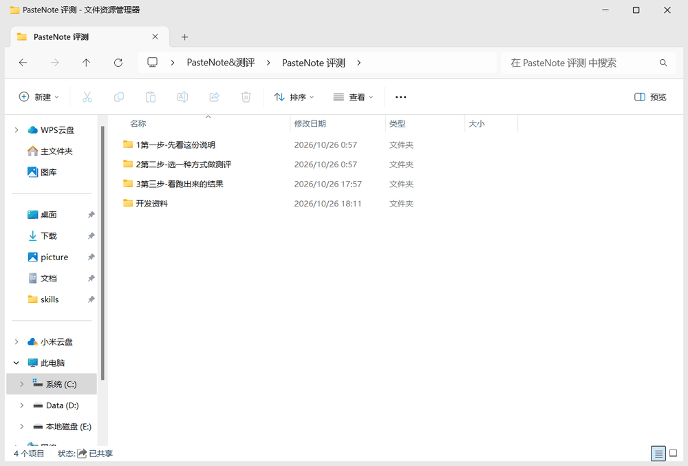
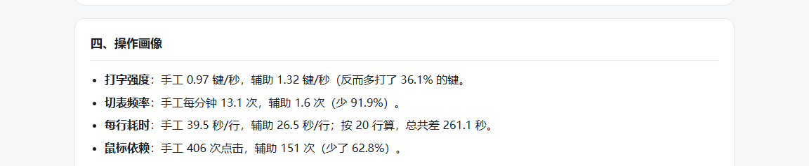

评测最容易被写坏的地方，不是算错数，而是口径松了：少算一次切表、把改错的时间不计入、样本不够也硬下结论。所以我先把规则写死，再跑；跑的人也不止我一个——我跑了两轮，另请一位朋友按同一套流程跑了一轮两遍。

01先说清楚：这个工具不是为了当「马鞭」
我做 PasteNote，是为了在那个工作场景里把舒适感和便利性提上去，效率是顺带的；不是为了把这几十秒再压一遍、做成一根抽在自己身上的「马鞭」。
那段时间每天要在同一张表和另一个窗口之间来回几十次。真正难受的不是「慢」，是那种持续的琐碎：手要不停找位置，眼睛要不停重新认路，脑子里还挂着「刚才那条到底联系上没有」。这些不会出现在任何报表里，但它一直在消耗人。
所以这一页的读法是：舒适度是目标，时间是结果之一；测量是为了少瞎改，知道自己这一刀落在哪儿，比再多快 3 秒重要。
02为什么还要测
光「用着舒服」回答不了三个问题：还值不值得继续改？该改哪一步？能不能推荐给别人？
更麻烦的是作者身份：既是运动员又是裁判。人一旦希望某个数字好看，口径就会不知不觉松掉。所以这次刻意反着来：口径先写死，闸门放在「判卷全对才记数」上；再请一个没有被剧透的朋友跑一遍——他自己跑出来的数字，比我说服力强。
03把口径写成规则
2026-10-25～26 把测量做成脚本，让程序替我做判断，而不是靠「我记得按对」：
| 环节 | 定死的规则 | 为什么必须这样 |
|---|---|---|
| 计时 | 长按右 Ctrl ≥0.3 秒、松手那一下才开始；轻按一下结束。开表、找窗口这些前戏不算 | 「开表快慢」不是被测对象；把前戏算进去，两遍的差距会被稀释 |
| 改错 | 判卷发现错、改完重判的时间继续计入 | 不计入就等于「改完再测一遍」，误差正好被藏进最容易被质疑的地方 |
| 计数 | 低层键盘钩子、不含修饰键；每 50ms 看一眼前台窗口，标题变了 +1；鼠标只数左键 | 「按了几个键」要能重复算出来；右键滚轮不算，点单元格、点标签页算——它们是真实的定位成本 |
| 判卷 | 逐格比四列；全对才写进结果表，没有「强制导入」；判卷前先比对文件指纹 | 只采信「做对了」的轮次，才能把「操作成本」和「做错了」分开谈 |
| 采信 | 两组各一行、行数 = 期望、0 不一致；任何一条不满足就重跑，不补数 | 补数会让样本看起来完整，实际上是在编 |
| 数据链 | csv 是真相，xlsx 每次从它重建；结果逐轮留底 | 留的是「第一次判卷错了几处」，而不是最终结果——最终一定全对，没有信息量 |
还有两处是踩出来的：开始计时后静置 0.9 秒、取两次读数的较大值，避免「还没动手就记了 2 次切表」；每遍开跑前先把空白表恢复（并用字节数核对），否则上一轮的字会混进这一轮。
04结果：一轮，两遍
2026-10-26 下午正式跑的一组，同一个下午、同一批 20 行：
| 时间 | 版本 | 行数 | 用时 | 按键 | 切表 | 鼠标 | 首次不一致 |
|---|---|---|---|---|---|---|---|
| 10-26 16:41 | 手工 | 20 | 790.2 秒 | 766 | 172 | 406 | 0 |
| 10-26 16:51 | PasteNote 辅助 | 20 | 529.1 秒 | 701 | 14 | 151 | 0 |
| 指标 | 纯手工 | PasteNote 辅助 | 变化 |
|---|---|---|---|
| 用时 | 790.2 秒 | 529.1 秒 | −33.0% |
| 秒 / 行 | 39.5 | 26.5 | −32.9% |
| 按键次数 | 766 | 701 | −8.5% |
| 按键 / 行 | 38.3 | 35.0 | −8.6% |
| 窗口切换 | 172 | 14 | −91.9% |
| 鼠标左键点击 | 406 | 151 | −62.8% |
| 按键 / 秒 | 0.97 | 1.32 | +0.35 |
同一天下午更早还有一组（14:28 / 14:43）：手工 932.3 秒（首次判卷错 2 处、重判 1 次）对辅助 671.6 秒，省 28.0%。两组放在一起看，方向一致，但绝对秒数差别不小——这正是为什么不能只报一轮就下结论。
| 时间 | 版本 | 用时 | 按键 | 切表 | 鼠标 | 首次不一致 |
|---|---|---|---|---|---|---|
| 10-26 14:28 | 手工 | 932.3 秒 | 772 | 95 | 306 | 2 |
| 10-26 14:43 | PasteNote 辅助 | 671.6 秒 | 721 | 58 | 219 | 0 |
| 10-26 16:41 | 手工 | 790.2 秒 | 766 | 172 | 406 | 0 |
| 10-26 16:51 | PasteNote 辅助 | 529.1 秒 | 701 | 14 | 151 | 0 |
「首次不一致」= 第一次判卷错了几处（0 = 一次全对）；改完重判的时间仍计入用时。
05朋友的协测：同一套流程，另一个人的手
自己测自己的工具，最难摆脱的就是「我知道该怎么按」。所以请了一位有同类工作场景的朋友，按同一份说明、同一套 20 行数据自己跑两遍；我只提供流程，不参与操作。
| 样本 | 手工 | 辅助 | 省时 | 切表 | 鼠标 | 按键 |
|---|---|---|---|---|---|---|
| 我（正式那轮） | 790.2 秒 | 529.1 秒 | 33.0% | 172 → 14 | 406 → 151 | 766 → 701 |
| 协测 1 · 261029-004431 | 630.3 秒 | 544.5 秒 | 13.6% | 108 → 16 | 317 → 164 | 764 → 695 |
朋友那份省了 13.6%，比我低，但两个结构性的数字仍然同向：切表 108 → 16（−85.2%）、鼠标 317 → 164（−48.3%）、按键只降 9.0%。也就是说，「省在找和切、不在打字」不是我一个人手速的问题，换双手也一样。
06归因：省在「找」和「切」，不在「打字」
如果只看「快 33%」，很容易得出「工具提高了输入效率」——但按键次数几乎没动（−8.5%），每行还是 35 下左右。真正掉下去的是两类动作：
- 切表：172 → 14。原来处理完一条要回主表找下一条、再切回来；现在下一条已经在剪贴板里，这一步被整段省掉。
- 鼠标点击：406 → 151。点单元格、点标签页这些定位动作少了六成，是两遍之间最大的单项差异。
还有一个反直觉的数字：按键/秒从 0.97 升到 1.32。同样的打字量被压缩进更短的时间——手没变快，是中间的空转（找表、切窗、重新定位）被去掉了。
07从数字到动作：每条建议都带「怎么验证」
报告最后一节不是总结，是七条改动建议，每条都写着现状、怎么改、预期，以及下一轮用什么数字验收：
| 现状（数据说的） | 怎么改 | 预期 | 怎么验证 |
|---|---|---|---|
| 按键只降 8.5%，省时不在输入环节 | 粘贴后自动把光标定位到下一个待填字段，支持「回车即跳下一格」 | 按键再降 10~15% | 下一轮按键总数 < 650 |
| 切表被整段省掉，但仍依赖「记得回表」 | 界面固定一个「表列表侧栏」，显示当前表名与已填行数，点击即切 | 切表稳定在 20 次以内 | 两次跑测的切表都 < 20 |
| 鼠标点击仍有 151 次，是最大单项动作量 | 给粘贴、确认、下一行绑快捷键，并在界面上标出提示 | 点击降到 100 以内 | 下一轮点击总数 < 100 |
| 主观题唯一抱怨是「皮肤太少」，功能层面无痛点 | 3~5 套内置主题（浅色 / 深色 / 高对比），一键切换并记住 | 不影响时间指标，提升满意度 | 复测时 Q5 是否还提皮肤 |
这张表其实是评测里最像产品经理的部分：把「数据说了什么」翻译成「改哪里、改到什么程度算成功」。没有最后那列「怎么验证」，前面所有数字都只是一次漂亮的陈述。
08交付形态：一个别人也能跑的包
评测跑通一次不算完——要能交给别人复现，才有意义。所以最后交付的不是一份报告，是一个包：

- 三个入口，按目的分开：正式评测（两遍自动串起来，只点一次）、半自动演示（机器自己跑，只验功能）、教学演示（只看不记）。机器节奏的数据不进结果表。
- 协测（已跑 1 份）：朋友用同一个包跑了同样两遍，报告右栏按「逐份明细」列出，不做统计推断；再加人也只写 n 份，不改口径。
- 报告：数据 + 6 个主观问题的原话 + 局限 + 建议，一键生成 HTML / MD；AI 分析只负责把数据讲成话，数字一律来自结果表。
- 抽查清单：三条验真——原始行能不能回算、数字是不是真人跑出来的、口径声明是否属实。一条不过，就别把数字写进简历。

09原始报告：跑完自动生成的那一份
这是评测包跑完后自动生成的报告原件（2026-10-29 01:29 生成）：包含关键数据、对比、操作画像、6 道主观题的原话、局限与未测、七条建议，以及附录里的口径声明和原始 CSV。数字全部来自结果表，AI 只负责把它讲成话。
结果逐轮留底 数据链 四个数字背后的文件
csv 是真相，xlsx 每次从它重建；报告里的每一行都能回到原始记录。完整包在下方网盘。
跳到「获取原文件」 ↓
10局限
- 样本仍然很小：两个人、四行记录。我跑了两轮，朋友协测一轮；这只能看方向，做不了统计推断。再加人也不会写成「多人实测」——n 份就写 n 份。
- 机器节奏的数字不能引用。半自动 / 演示版跑出来的 872.8 秒、401.8 秒、89.3 秒是机器手速，只用于验收功能。
- 用「粘回本表」替代真实 IM。找联系人、切会话这些摩擦没有被计入，所以本评测可能低估工具在真实场景里的收益。
- 计数器的边界。切表按 50ms 采样，极快切换会漏记；鼠标只数左键；非管理员进程看不见提权窗口。
- 不能证明准确率提升。四行记录里只有一轮手工出现过 2 处不一致；20 行、两个人撑不起「更不容易错」的结论，只能说这几轮没出错。
我不太相信「我感觉快多了」这种结论，哪怕它可能真的是对的——因为它没法复查、没法归因，也没法告诉下一个人该怎么验证。评测做的事，本质上是把一句模糊的感受拆成三样东西：能回算的数字、能解释的差异、下一版该改哪里。
11获取原文件
整套评测包（说明 + 三套入口 + 判卷脚本 + 结果表 + 自动报告）在网盘里，可以直接下载复跑：
效率工具评测包 · 可复跑
按「第 1 步说明 → 第 2 步选入口 → 第 3 步看结果」走一遍；正式评测两遍自动串起来，只点一次。